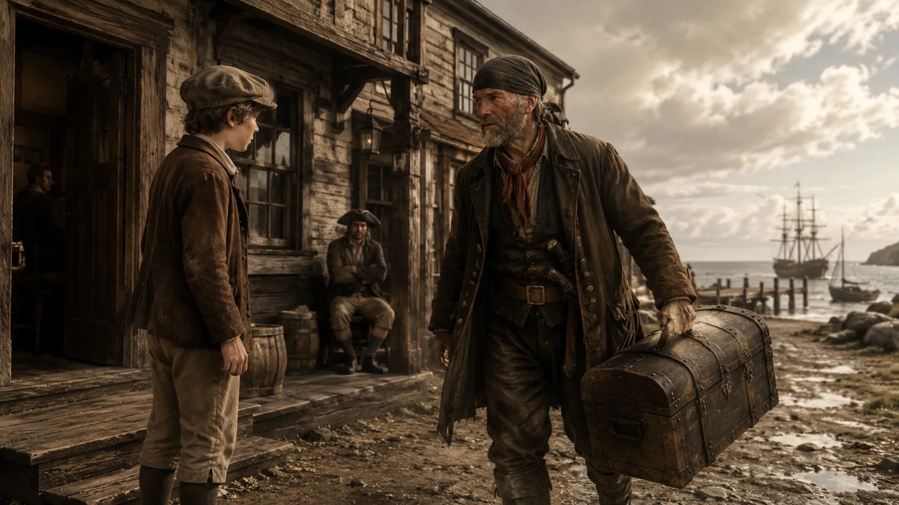
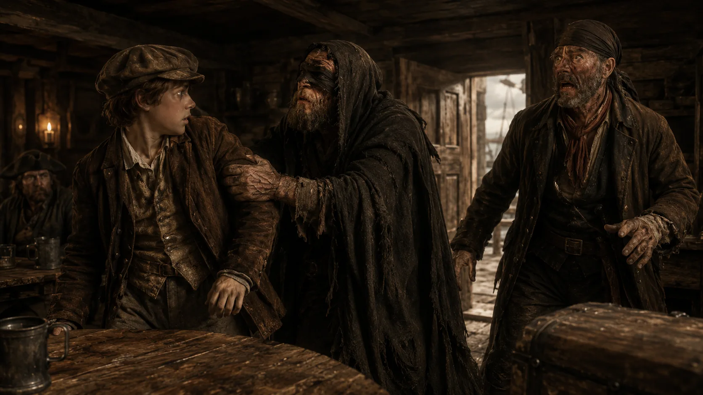
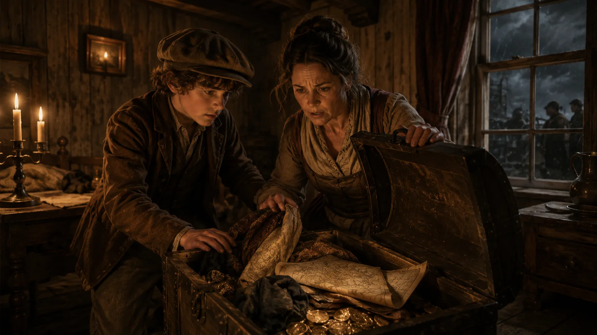
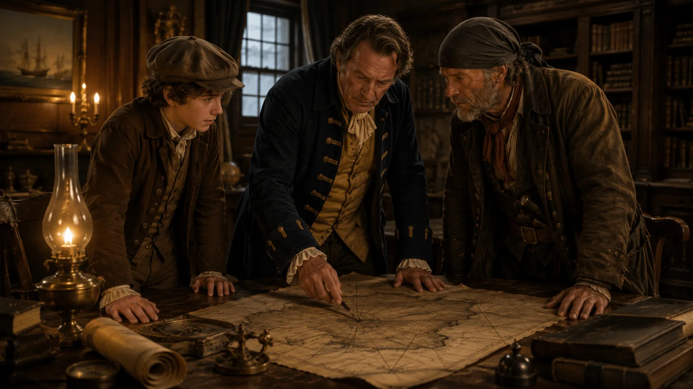
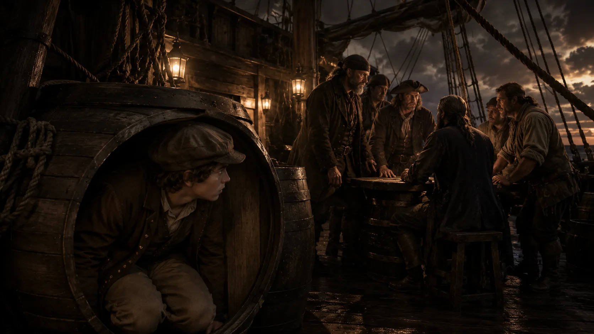
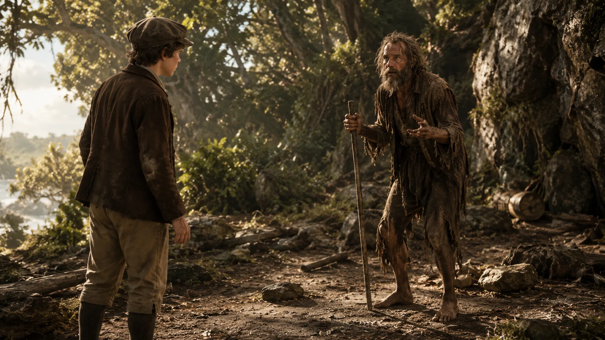
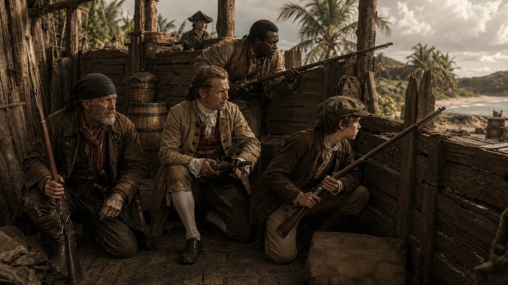
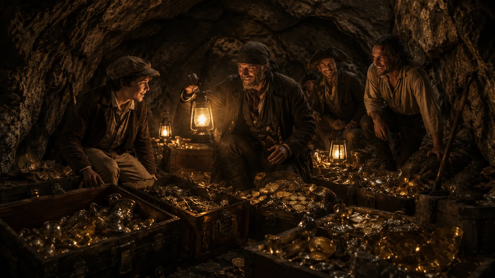

My name is Jim Hawkins. I lived with my mother and father at our small inn, the Admiral Benbow, near the sea. It was a quiet place — until the day the old sailor came.
He was a tall man with a deep scar across one cheek. He carried a heavy sea chest and paid my father in gold coins. He drank rum every evening, sang old sea songs, and never told us his real name. We only called him "the captain".
One night he took me aside. His eyes were dark and afraid.
"Jim," he said, "here is a silver coin every month. But you must watch for me. Watch the road." "Watch for who, sir?" I asked. "A seafaring man with one leg. If you see him, run to me at once."Weeks passed. My father grew ill and died. I was afraid of the captain, but I also felt sorry for him.

Then, one grey afternoon, a strange visitor came to the inn — a blind beggar in a torn cloak. He tapped the road with a stick. I opened the door and he took my arm with a hand as strong as iron.
"Take me to the captain, boy. And no tricks."Inside, the blind man put something small into the captain's hand. Then he was gone. The captain opened his fingers. On his palm lay a round piece of black paper.
"The Black Spot," he whispered. "They want me dead."He tried to stand, but his face turned white. He fell to the floor and did not move again. My mother came running. The captain was dead.
We did not have much time. Other pirates were near — the blind man had brought a message from them. My mother and I ran upstairs and opened the sea chest.

Inside there were old clothes, a bag of gold coins, and a paper — a paper folded many times. I opened it and my hands shook.
It was a map. An island. A red cross. Words in old handwriting: Bulk of treasure here.
Outside, we heard voices. They were coming. My mother took the gold, I took the map, and we ran into the fog.

By morning, we were safe at the doctor's house. Dr. Livesey looked at the paper carefully. Then he called Squire Trelawney.
"This is Captain Flint's treasure map," said the doctor quietly. "Half the pirates of the world would kill for it." "Then we shall sail before them!" cried the Squire. "And, Jim — how would you like to come as our cabin boy?"My heart beat fast. I was only fourteen. But I said the only word that mattered.
"Yes."Robert Louis Stevenson was not just a writer — he was a sharp observer of two worlds at once. Born in Edinburgh in 1850, he was a sickly boy who spent long nights indoors, listening to his nurse tell him old sea stories. He grew up to travel the world in search of a climate that would let him breathe: France, America, the South Pacific. Wherever he went, he watched people the way a doctor watches a patient — kindly, but not without seeing everything.
Treasure Island began as a game. In the summer of 1881, in a rainy Scottish holiday cottage, Stevenson drew a map of an imaginary island for his stepson Lloyd. The boy was delighted. Stevenson invented a story to go with the map — pirates, mutiny, one-legged sailors, a boy who says yes to a voyage. He wrote a chapter every morning and read it aloud after tea. The book was finished before autumn. It became one of the great adventure novels in English.
This story is worth reading because it is not only about pirates. It shows how a fourteen-year-old boy grows, makes decisions, and comes home changed. Jim lies once, disobeys orders, and takes risks no adult would allow — but he is also brave, loyal, and capable of real courage. His adventures move from a quiet inn on the English coast to a hot Caribbean island where he has to make serious choices — about trust, violence, and who he wants to be.
Squire Trelawney bought a good ship, the Hispaniola, and hired a crew. The captain was a strict man called Smollett. The cook — chosen by the Squire himself — was a tall sailor with one leg and a bright yellow parrot on his shoulder. His name was Long John Silver.
The moment I met Silver, I forgot the captain's warning about a seafaring man with one leg. Silver smiled kindly. His voice was warm. He knew every song, every sea joke, every man in the port. All the crew respected him. Even I began to trust him.
But my father used to say: trust is a slow gift and a quick loss. On the sea, that lesson came faster than I expected.
The voyage was long. One warm evening, near sunset, I wanted an apple. On deck stood a large wooden barrel, half full of apples. I climbed inside to reach the bottom ones — and before I could climb out, I heard heavy steps. Silver's crutch tapped on the wood. Two other sailors came with him. They sat down beside the barrel.
"Silver, tell us the plan again." "Speak quietly, mate. The boy sleeps light."I did not move. My hand was tight around an apple I could not eat. Their voices were low, but every word came clearly through the wood.
"When do we strike?" "Not yet. Wait until the map does its work. Let the captain find the treasure. Then… all of them go." "All? Even the doctor?" "All. No witnesses. That is the rule of the sea."The word mutiny passed between them like a knife. I remembered Silver's warm smile — the same man who now spoke of murder. Everything I had trusted was a mask.
Suddenly, a voice from above called out: "Land! Land in sight!" The three men jumped up and ran to look. I was alone in the barrel with my heart beating hard enough to break the wood.
They planned to kill us all.
I climbed out carefully. The sky was pink with sunset. The men were all at the front of the ship, laughing and pointing to a green shape on the horizon — our island. I looked at Silver. He was smiling again. Same warm smile. Same warm voice. But now I saw the knife behind it.
"Jim, boy! Come see the island! Beautiful, isn't she?" "Yes, sir…"My mouth was dry. I could not answer more. I had heard something I was never supposed to hear. My adventure had turned into something real, something dangerous.

That night I could not eat. I waited until the captain, the Squire and Dr. Livesey were alone in the cabin. Then I knocked. They looked surprised — a cabin boy so late.
"Sir… I must tell you something. Please close the door."The words came out fast. Silver. The barrel. The mutiny. The plan to kill everyone once the treasure was found. Dr. Livesey listened without moving. The captain's face grew hard.
"How many men?" the captain asked. "Most of the crew, sir. I heard at least six names." "Then we are outnumbered."I looked down at my hands. They were shaking. I tried to speak again, but my voice was smaller now.
"I should have told you sooner…" "No, Jim. You told us in time. That is what matters."Dr. Livesey put a hand on my shoulder. For the first time that day, the ship felt a little safer. But only a little. Outside the cabin, we could hear the crew singing an old sea song. Silver's voice was the loudest. He sounded happy. He sounded like a friend. And that was the worst part of all.
"Say nothing to anyone." "Not a word. Not even to yourself." "I promise."We looked at each other and nodded. We made a plan: pretend everything is normal, land on the island, then act first. But the secret did not bring peace. At night, I could not sleep. Every footstep on the deck felt dangerous. Every laugh from the crew sounded like a threat. The secret stayed with me. And it only made everything heavier.
Every hour of silence is another hour Silver can strike first. Speed saves lives. A warning today is worth more than perfect proof tomorrow.
One boy's word against a whole crew is dangerous. Better to listen again, learn more names, learn the exact day. Then act with certainty.
You must warn the captain. Explain what you heard. Use phrases like "Sir, please close the door…" / "I know it sounds impossible, but I heard every word…"
You are strict and suspicious. You want facts. Ask questions. Use phrases like "How many men?" / "Are you sure it was Silver?" / "Why did you not tell me at once?"
Together: agree on the plan. Do you land? Do you turn back? Do you fight now?
After the night in the cabin, Jim carried the secret like a stone in his pocket. He could not sleep well, and even the daylight seemed darker than before. Stevenson shows us how a boy slowly learns that the world is not always what its smile promises.
But the sea does not wait. In the morning the crew saw the coast: a green island under a hot sun, with three hills and a strange smell in the wind. Silver was still smiling. Jim was still silent. And the treasure — the treasure was very close now.
Click one word on the left, then its match on the right. Correct pair locks green. Wrong pair shakes red — try again.
Read each statement and guess if it is true or false. Don't worry — you can't be wrong here. After you read the story, come back and check.

The morning we reached the island, everyone was restless. The sun was hot, the sea was still, and the trees on the shore smelled strong and green. Captain Smollett gave the order: the men could go ashore in groups. He hoped that a few hours on land would keep the mutineers quiet a little longer.
I could not stay on the ship. I do not know why. I only know that when the last small boat pushed off from the side, I slipped into it and hid under a sail. Nobody saw me. When we reached the beach, I jumped out first and ran straight into the trees.
I had no plan. I only wanted to be far from Silver's voice. The jungle closed around me — thick, hot, alive with birds. I walked until the sound of the crew was gone. And then, quite suddenly, I heard something else. A cry. And after it — a gunshot.
"Somebody just died," I thought. "One of the honest men. Silver has begun."I dropped to the ground, my heart loud in my ears. Between the leaves I saw two figures on a path. One was a big sailor from Silver's group. The other was Tom, one of the crew who had refused to join the mutiny. Tom was already on the ground. He was not moving. The sailor put his knife back into his belt and walked away, whistling.
I ran. I ran without direction, only away, only deeper. Branches cut my face. I did not stop until my legs shook.
At last, on a hill, I saw something strange through the trees — a wooden wall, old and grey. A stockade. A small fort, built long ago, and now empty. A safe place, if only I could reach it.
But before I could move, I saw a shape between the trees.
A man. But not like any man I knew. His hair was long and tangled. His clothes were made of old sails and goat skin. His beard was thick and grey. His skin was burnt dark by three tropical years. His eyes were bright and very quick.
He came out of the trees carefully, hands wide, showing me he had no weapon. His voice was rough — the voice of someone who had not spoken to another human being in a long time.
"Poor Ben Gunn," he said. "I'm poor Ben Gunn. Three years alone here… three years alone…"I stopped. I did not know if he was dangerous or mad or both. But his eyes were not the eyes of an enemy. They were hungry — for a face, for a word, for company.
"You're not with them? With Silver?" "No, sir," I answered. "Silver is trying to kill us all."Something flashed in his face — anger, or hope, I could not tell.
"Then listen, boy. Poor Ben Gunn was left on this island by that same Silver, three years back. But poor Ben Gunn has not been idle."He leaned close. His voice fell to a whisper.
"I found the treasure. I found it long ago. And I know where it is now."
The jungle was quiet. The birds had stopped. Somewhere on the ship, Silver was smiling and telling his men that everything was going according to plan.
But it wasn't. Not any more. Because for the first time in this voyage, Silver did not know something. He did not know that I was still alive, and free, and standing next to a man who had already won.
Ben Gunn hates Silver as much as Jim does. He has already survived three years — he knows the island. He has information Jim needs. Enemies of enemies can be friends.
Three years alone can break a mind. He was a pirate once. His "treasure" may be a trick. A lonely man will say anything for company. Jim should run.
You are alone in the jungle with a wild man. You are afraid but also curious. Ask him careful questions. Use phrases like "Who are you really?" / "How can I know I can trust you?" / "Why should I believe you about the treasure?"
You have not spoken to another person for three years. You want to convince Jim to help you get off the island. Use phrases like "I promise on my life…" / "You are the first face I've seen in three years…" / "Take me back to England, boy…"
Together: play the same scene twice. First — Jim is trusting. Second — Jim is careful. Compare the two outcomes.

Click one word on the left, then its match on the right. Correct pair locks green. Wrong pair shakes red — try again.
Read each statement and guess. You can't be wrong here. After you read the story, come back and check.

Morning came slowly to the stockade. After the night of shots and fear, the little wooden fort was quiet. Ben Gunn had brought me safely inside — the doctor, the Squire, the captain and two of the honest men were all there. We had food, powder, water, and one great advantage: Silver did not know Ben Gunn was on our side.
Just after sunrise, one of the men on watch called out: "A white flag! Coming up the path!"
We looked over the wooden wall. There, walking slowly toward the fort with his crutch tapping on every step, was Long John Silver himself. He held a white handkerchief tied to a stick — the sea signal for peace talks. Behind him at the edge of the trees stood two of his men, watching.
Captain Smollett did not smile.
"Come no closer! State your business!" "Captain, sir!" Silver called back, warm as sunshine. "I bring a proposal from the crew. A fair proposal. May I come in?" "You may. Alone. And I promise you nothing."Silver climbed over the low fence with surprising skill for a one-legged man. His parrot was on his shoulder. He took off his hat and gave a small bow to the captain, to the doctor, to the Squire. When his eyes met mine, he smiled the same warm smile from Bristol.
"Ah! Jim, my boy! I was worried about you. Delighted to see you well!"I said nothing. My tongue felt heavy. Silver's warmth was still there — still real, in a way — and that was what made it terrible. He was not pretending. He truly liked me. And he was still ready to kill me if the map required it.
The captain sat down. So did Silver.
"To business," said Silver quietly. "You give us the map. You give up the fort. We take the treasure. In return, I give you my word: no man of yours will be harmed. When we sail, we drop you at the first safe port." "And your word, John Silver? What is it worth?" "Sir, I am a man of honour when honour is offered to me."The captain looked at Silver for a long moment. Then he stood up and walked to the window.
"Here is my answer, Silver. You will not have the map. You will not have this fort. You will not have one grain of powder from us. Go back to your men. Tell them to surrender — every one — and I will bring them to England for a fair trial. That is my only offer."Silver's smile did not move for one full second. Then, slowly, it fell from his face like a mask sliding off. His eyes turned cold. His voice, when it came, was different — a thinner voice, sharper, uglier.
"You'll regret this, captain." "Not for a moment."Silver stood, took his crutch, and moved toward the door. Before he left, he looked at me one last time. And this time — for the first time — there was no warmth in his face.
"Jim, my boy. When the shooting starts — remember you had a chance."He limped out of the fort. He did not look back. At the edge of the trees, he raised his hand. Somewhere in the woods, a gun fired — a single warning shot that split the morning apart.
I stood next to the captain, and I did not shake, and I did not cry. I only understood something that I had not truly understood before. In one hour I had seen two Silvers. The Silver who smiled and remembered my name and asked if I was well. And the Silver who would kill me before breakfast if it served him. Both were real. Both were the same man.
And that, I thought, is what a pirate really is — not the flag, not the sword, not the parrot. It is a man who can hold both faces at the same time, and choose whichever the moment requires.
Silver truly likes Jim. He remembers his name, worries about him, warns him. Bad men can also have real feelings. That is what makes them dangerous — not that they are all evil, but that they are both at once.
Silver charms everyone — the Squire, the captain, Jim. It is his tool. He does not love the boy; he studies him. His warmth is polished the way a knife is polished. Trusting it is what gets you killed.
Silver has gone. The men in the fort are afraid. You must give an order and steady them. Use phrases like "We hold this position." / "We have water and powder — they do not." / "Every man to his window."
You are shaken by Silver's warning. Part of you wonders if the captain should have accepted the deal. Ask him. Use phrases like "Sir, may I speak?" / "He offered our lives…" / "How can we be sure we will win?"
Together: play the same conversation twice. First — the captain is patient. Second — the captain is sharp. Compare how Jim reacts.

Click one word on the left, then its match on the right. Correct pair locks green. Wrong pair shakes red — try again.
Read each statement and guess. You can't be wrong here. After you read the story, come back and check.

After Silver's attack on the stockade, the secret in my head was too heavy to carry. The captain was wounded. The Squire was tired. The doctor was quiet. I did not sleep well, and even my hunger stopped working. But one thing kept me awake — a piece of information Ben Gunn had given me on our first day, in his rough excited whisper.
"Under the white rock, on the far side of the little bay, poor Ben Gunn has hidden a boat. A coracle — small and round, no bigger than a wash-tub. It will hold one boy. It will ride any tide."
That night, when Joe on watch was half-asleep and the moon was thin, I slipped over the low wall of the stockade. I did not tell anyone. I walked barefoot through the wet grass to the beach. Under the white rock, exactly where Ben Gunn had said, I found the little round boat and its short paddle. It smelled of goat skin and old tar.
I pushed the coracle into the black water and climbed inside.
The Hispaniola was anchored across the bay. Two lanterns were burning on her — one at the stern cabin, one high on the mast. The mutineers had left two men aboard. I could not hear them, but I saw one shadow moving up on deck. I paddled low. The little boat spun in slow circles no matter what I did — it had no keel. Twice I nearly capsized. Twice I nearly turned back. My arms shook. My hands were bleeding from the rough rope of the paddle.
At last, after what felt like hours, my little coracle bumped against the side of the great ship. The anchor cable was thick as my wrist, wet, and singing quietly with the pull of the tide. I took out my knife.
One thread. Two threads. Three. Fear stopped me — if I cut too fast, the ship would swing round and crush me. So I cut slowly, listening for the moment when the tide would lift her weight. When the great cable finally cracked in two, the Hispaniola began to drift, silent as a ghost, out into the dark bay.
Above me, on the deck, two voices — angry, drunk — began to shout.
"You lie! I saw you take the last bottle!" "You called me what? Say it again to my face!"I could hear steel now — knives being pulled. A crash. A cry. Then silence again. I did not know who was left up there. But the ship was moving. I paddled hard around to the stern, caught a hanging rope, and — half-drowned, shivering, arms burning — I climbed aboard my own ship for the first time as its master.
The deck was empty. In the pale light I saw one man dead by the wheel. His name had been O'Brien. The other, a heavy sailor called Israel Hands, was slumped against the wall, wounded and half-conscious. His eyes opened when I stepped closer. They stared at me — surprised, then thoughtful, then very slow.
"Hawkins," he whispered. "So it was you."I said nothing. I stood on the empty deck of the Hispaniola in the wet dark, and I understood something bigger than fear. Silver had woken up on this island as its king. Silver would wake up tomorrow as its prisoner. Because the ship — the one thing he could not do without — had drifted out of his hands, silent as a ghost, in the night. And I, small barefoot Jim Hawkins, was standing on her deck.
I had walked back from the dead. Not the way I had planned. But better. Bigger. And terrible in a way I did not yet fully understand.
That was the night Jim Hawkins learned that some victories cost more than the winner can see.
Jim did in one night what the captain and the doctor could not do in a week. He turned the whole war around. Without his ship-taking, Silver would have escaped with the treasure. That is not luck — that is courage rewarded.
He disobeyed orders. He left the stockade weak. He could have drowned twice. He could have been killed by the drunken mutineers. It worked — but only because he was lucky. Ten times out of a hundred it would have failed.
You have to face the captain. You disobeyed orders. But you brought the ship. What do you say? Try to be honest. Use phrases like "Sir, I left without permission. I did it because…" / "The ship is anchored in the bay. Silver cannot leave."
You are furious — and also relieved — and also impressed. You cannot show all three at once. You must decide what he is: a hero, a fool, or both. Use phrases like "You disobeyed a direct order." / "And yet…" / "Don't do that again."
Together: try the scene twice. First — the captain is angry. Second — the captain is proud. Compare which version feels truer.

Click one word on the left, then its match on the right. Correct pair locks green. Wrong pair shakes red — try again.
Read each statement and guess. You can't be wrong here. After you read the story, come back and check.

After I took the ship, the sun rose slowly on a strange morning. The Hispaniola was mine, but she was not truly safe. I could not sail her alone — she was too big for one boy. And there was one man still alive on board.
Israel Hands was slumped by the wheel, a red stain across his shirt. He was pale and could hardly stand. But his eyes were clear, and they followed every step I took across the deck.
"Hawkins, my boy," he said, softly, "you've got the ship. I've got the wound. Let us make a deal. You give me brandy and a strip of cloth for this cut. I'll help you sail her into North Inlet — quiet water, sandy bottom, safe as a cradle. Then we're square."I looked at him carefully. He was wounded, yes. He was almost helpless, yes. But there was something in his voice — a small warm politeness — that I did not trust. I had heard it before. It was the same voice Silver had used. The voice of a man who could smile and kill in the same breath.
I fetched him brandy. I bound his shoulder. We sailed together — I at the ropes, he shouting orders. The wind was gentle. The green coast of the island slid past on our right. For half an hour I almost believed him. Then, as I bent down to look at the chart, I felt his eyes on my back. I turned. He was reaching under the coil of rope by his feet, and there was steel in his hand — a long, thin dagger.
He tried to smile.
"Just… straightening the rope, boy."I ran.
I did not go for the pistols in the cabin — he was between me and them. I ran up the shrouds toward the top of the mast. Israel Hands roared like a wounded bull and came after me, slower than a well man but faster than I expected. He climbed with the dagger between his teeth. Blood ran down his shoulder. The sea rolled under us. Ropes shook.
I was faster. I reached the yardarm before him and pulled my two small brass pistols from my belt. I had loaded them the night before. My hands were shaking, but the pistols were steady.
"One more step, Mr Hands," I called down, "and I fire!"He stopped. He took the dagger from his teeth. His face changed — the warm smile came back — the same smile Silver had used at the fort.
"Jim, my boy," he said, softly, "we've been at cross-purposes, you and I. Let's talk this over. I'll give up. I'll come down. You've won."For one second I lowered the pistol to listen. In that second, his right hand moved. A silver flash left his fingers. Something hit my shoulder — a sharp cold blow — and I saw the dagger stuck through the cloth of my shirt, pinning me to the mast.
Fear made my hands fire — I did not aim, I did not choose. Both pistols went off together.
Israel Hands' hand loosened from the rope. He fell head-first into the blue water below, without a cry. A ring of small waves spread from where he sank. The sea took him. The dagger was still in my shoulder. My pistols were empty. And there was no one else alive on the ship.
I climbed down slowly. I pulled the dagger from my shoulder — it hurt less than I feared. I bound the cut with a strip of my own shirt. Then I sat on the deck, looking at the sea where he had disappeared, and I understood something no fourteen-year-old should have to understand.
Israel Hands had smiled at me twice. Both times he was choosing when to strike. I had not killed a monster — I had killed a man who was doing his job. A pirate's job. He would have done the same to me without a second thought. And yet, sitting on the deck with the sun rising over the sails, I could not stop looking at the empty water.
That was the day Jim Hawkins learned that a warm voice is the last thing you hear before the blade lands.
Hands had already thrown the dagger. Any longer and Jim was dead. A fourteen-year-old boy stayed calm, kept his powder dry, and saved his own life. That is not luck. That is courage under fire.
Jim lowered his pistol because a smile fooled him. He shot without aiming. Both his shots happened to hit. Ten times out of a hundred, Jim dies on that mast. He is not a hero — he is a boy who survived by accident.
You are alone on the deck. The dagger cut is bandaged. Your hands are still shaking. In your head you hear Israel Hands' voice — the warm one, the last one. What do you say to yourself? Try to make sense of it aloud. Use phrases like "I had no choice…" / "I keep looking at the water because…"
You are the same person, but ten years older. You know now what fourteen-year-old Jim could not know. What do you tell him? Are you gentle? Are you honest? Use phrases like "Boy, listen…" / "You will remember this for the rest of your life. And that's how it should be…"
Together: try the conversation twice. First — the older Jim comforts. Second — the older Jim tells the hard truth. Compare.

Click one word on the left, then its match on the right. Correct pair locks green. Wrong pair shakes red — try again.
Read each statement and guess. You can't be wrong here. After you read the story, come back and check.

By the time I returned to the stockade, my luck had turned. Silver had captured the fort while I was away with the ship. My friends were gone — Ben Gunn had led them safely somewhere I did not yet know. Now I was Silver's prisoner. He tied a rope around my waist and told his men: "Jim comes with us. He's my little insurance."
They set out for the treasure at dawn, six pirates, one boy, one map. The forest was thick and hot. Silver was strangely quiet. His crew were loud and greedy — laughing, arguing, planning what each of them would do with a share of the gold.
Then, at a small clearing, one of them shouted and pointed. On the ground, between the roots of a large tree, lay a human skeleton. Old, sun-bleached, one arm stretched out — pointing to the north. The men fell silent.
"Flint's joke," Silver said quietly. "He killed one of his own crew and left him here as a compass. So we'd know we were on the right path."Nobody laughed. Nobody spoke. They walked on, colder now.
At last, we came to the marked place — a hollow beneath a great tree. The men fell to their knees and began to dig. Faster. Faster. Fingers bleeding on rocks. And then — one of them straightened up, a broken piece of a chest in his hand. A single gold coin lay in the earth.
The pit was empty.
Somebody had been here first.
The men stared at Silver. Their faces changed. He was not their captain now. He was their fool. They pulled out knives. They stepped closer.
And that was the second when three shots cracked out of the trees. Two of the pirates fell dead. The others screamed and ran. Dr. Livesey, the captain, and Ben Gunn stepped out from the green shadows, muskets smoking. Silver stood very still, both hands slowly open at his sides.
"Well, doctor," he said, softly. "Am I with you again — or against you?" "With us, John. For now."He switched sides like he was changing hats. Nobody was surprised.
Then Ben Gunn led us to his own cave — a small dry hall hidden in the rocks above the shore. Torches on the walls. And there, on the sandy floor, in three sea chests: piles of gold coins, bars of silver, cups, a small crown, jewels the colour of blood and jewels the colour of the sea. Three years alone, and Ben Gunn had carried Flint's whole treasure to this cave one bag at a time.
For three days we loaded the treasure onto the Hispaniola. Silver worked with us, polite, warm, telling old stories about ports we had never seen. At night I watched him. I never turned my back to him for one second.
On the fourth day we sailed home. A short crew — Ben Gunn, the captain, the doctor, the Squire, myself, and Silver. Somewhere near a small port on the Spanish coast, Silver went ashore for water. He took one small bag of gold with him. He did not come back to the ship. He escaped — and I think the doctor let him.
When at last we came into an English port, I stood on the deck of the Hispaniola and looked at the flat grey sea of home. Every man on board would be rich for the rest of his life. But I was thin, and my shoulder still hurt, and my dreams were still full of Silver's warm voice and Israel Hands' silver flash of steel.
I had my share of the treasure. It was more money than my mother could count. But for years afterwards, when the wind blew hard against the shutters of the Admiral Benbow, I would wake up sitting straight in bed, hearing a parrot cry:
"Pieces of eight! Pieces of eight!"
That was the day Jim Hawkins learned that a boy can bring home a treasure — but not the person he was before the voyage.
Silver switched sides in time. He worked with them for weeks. He never harmed Jim. Justice is not just punishment — it is measuring the whole man. He was a killer, yes; but he was also the reason they lived.
Silver murdered honest sailors on this voyage. He planned the mutiny. He was going to kill all of them once the treasure was in his hand. A charming killer is still a killer. Letting him walk away with gold is not mercy — it is cowardice.
Silver is gone. You suspected he would run, but you did not stop him. You know the doctor gave him a chance. You are not sure if you feel angry, or relieved, or both. What do you say to the doctor when he comes on deck? Use phrases like "Doctor… you let him go, didn't you?" / "I don't know what to feel about it…"
You did let him go. You cannot say that out loud — but you can say it in your own way. You knew Silver would find some small trick even if you tried to bring him to trial. Some things belong to God, not to court. Use phrases like "Some men are punished by their own future, Jim…" / "He got what he could carry. That is a small treasure for a big sin…"
Together: try the scene twice. First — Jim is angry. Second — Jim is quiet. Compare which one makes the doctor say more.
At the Admiral Benbow, he says yes to a voyage he does not yet understand.
In the apple barrel, he learns that warmth can hide a knife.
In the wild woods, he trusts a stranger because he has no one else.
At the stockade, he sees two Silvers in one hour and knows they are the same man.
On the coracle, he takes the whole ship — and learns that some victories cost more than the winner can see.
On the yardarm, he learns that a warm voice is the last thing you hear before the blade lands.
In Ben Gunn's cave, he brings home a treasure — but not the boy he was before the voyage.
— Robert Louis Stevenson · 1883 · adapted ·